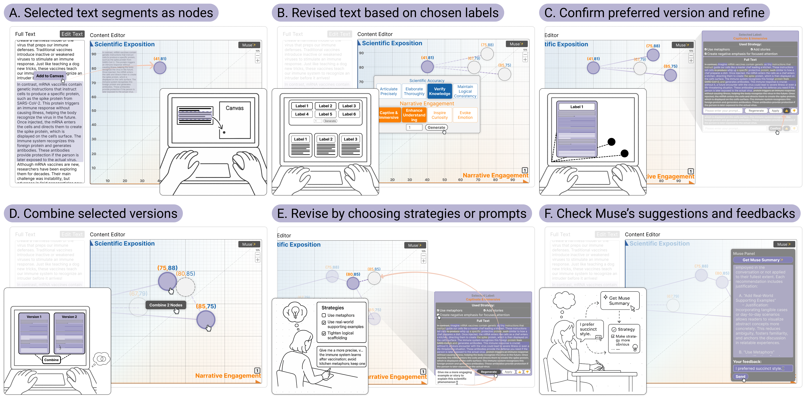

|
Jiaye Leng | 冷佳业 About MeHi, I'm Jiaye, a third-year Ph.D. candidate at City University of Hong Kong (CityUHK), working with Prof. Hongbo Fu and Prof. Miu Ling Lam. Currently my research focuses on Human-AI Interaction, Creativity Support, and VR/AR. During my studies, I closely collaborated with Prof. Hui Ye and Prof. Pengfei Xu. Previously, I obtained my master's degree from Beihang University (BUAA), supervised by Prof. Lili Wang. Email / CV / Google Scholar |

|
News
|
Selected Publications
* Equal contribution, † Corresponding author
|
|

Under Review
|
Spatial Balancing: Harnessing Spatial Reasoning to Balance Scientific Exposition and Narrative Engagement in LLM-assisted Science Communication Writing
Kexue Fu*, Jiaye Leng*, Yawen Zhang*, Jingfei Huang, Yihang Zuo, Runze Cai, Zijian Ding, Ray LC, Shengdong Zhao, Qinyuan Lei† [paper] | [video] |
|
ICXR 2024
|
LipText: Lip Tracking Based Text Entry in VR
Jiaye Leng, Zijun Wang, Jian Wu†, Lili Wang International Conference on Extended Reality (ICXR), 2024. [paper] | [video] |

CHI 2024
|
ProInterAR: A Visual Programming Platform for Creating Immersive AR Interactions
Hui Ye*, Jiaye Leng*, Pengfei Xu, Karan Singh, Hongbo Fu† ACM CHI Conference on Human Factors in Computing Systems (CHI), 2024. [paper] | [video] |
|
CHI 2023
|
ProObjAR: Prototyping Spatially-aware Interactions of Smart Objects with AR-HMD
Hui Ye, Jiaye Leng, Chufeng Xiao, Lili Wang, Hongbo Fu† ACM CHI Conference on Human Factors in Computing Systems (CHI), 2023. [paper] | [video] |

ISMAR/TVCG 2022
|
Efficient Flower Text Entry in Virtual Reality
Jiaye Leng, Lili Wang†, Xiaolong Liu, Xuehuai Shi, Miao Wang IEEE Transactions on Visualization and Computer Graphics (TVCG), 2022. Journal Track of IEEE International Symposium on Mixed and Augmented Reality (ISMAR), 2022. [paper] | [video] |
|
Website template from Jon Barron |